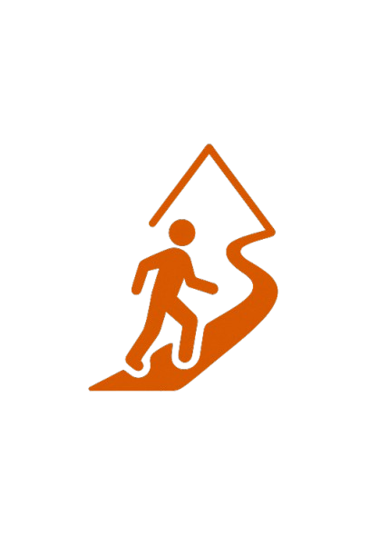
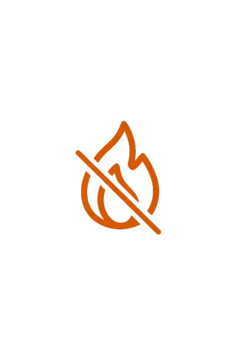
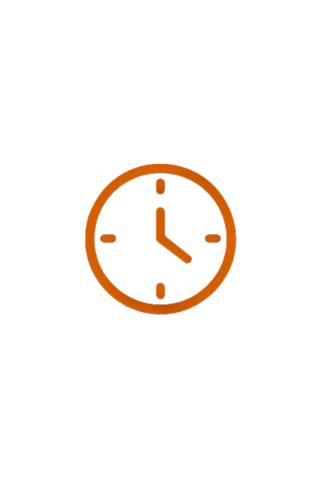
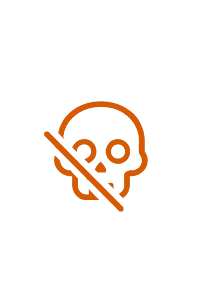
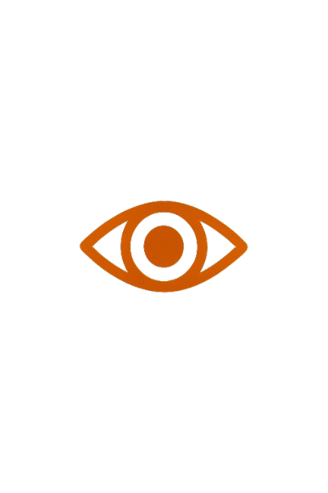
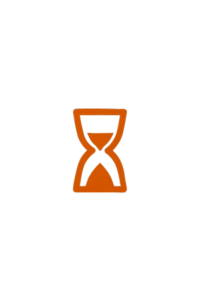

KODEX chlapa
"Mimo trasu"
... protože někdy ta správná cesta nevede po vyšlapané cestě ...
1. Jdu sám, když je třeba
Když ostatní zůstávají v pohodlí a stěžují si na svět, já vstanu o hodinu dřív a makám. Ne proto, že mi někdo tleská. Ale protože vím, že bez boje není růst.

2. Nečekám uznání
Udělal jsem něco správně v práci, ale šéf ani kolegové si toho nevšimli? Nevadí. Nedělám to pro potlesk. Dělám to, protože mám stanovený a pevně ukotvený standard.

3. Mluvím pravdu – sobě i ostatním – VŽDY
Místo výmluv řeknu: „Nezvládl jsem to, jak bylo potřeba.“ Místo lhaní: „Tohle už nechci dělat.“ Sebelži jsou jed, pravda je oheň – bolí, ale čistí.
4. Dělám to, co je těžké
Mohl bych scrollovat. Místo toho jdu cvičit, jdu do ticha, jdu do sebe. Vyhledávám nepohodlí, protože vím, že tam se tvoří charakter.
5. Stavím se za své hranice
Lidé mě tahají do něčeho, co už není v souladu se mnou. Neomlouvám se. Řeknu klidně „Ne.“ Nejsem had bez páteře.
6. Jsem zodpovědný za svůj čas
Vypnu sociální sítě, telefon, televizi. Sepíšu plán. Udělám jednu věc, co mě posune. I 15 minut denně dělá rozdíl. Nenechávám čas protékat mezi prsty. Je omezený.

7. Nepotřebuju být obětí
Neříkám „Nemůžu, protože…“ Říkám „Je to těžké, ale zkusím to.“ Nežiju v minulosti. Nečekám, až mě někdo zachrání. To se nikdy nestane.

8. Žiju podle svého vnitřního zákona
Ostatní se nechají manipulovat? Lžou? Zavírají oči? Můj zákon je napsaný jinak. Mám kompas. Svůj kompas. A ten neohýbám kvůli pohodlí.

9. Myslím na smrt – a tím žiju naplno
Každý den je dar. Neodkládám důležité rozhovory. Zavolám rodině. Řeknu ženě, co k ní cítím. Připomínka smrti mi dává odvahu žít.

10. Jsem chlap „Mimo trasu“
Nesnažím se zapadnout. Nežiju podle „mělo by se“. Jdu cestou, která není vyšlapaná. A víš proč – protože mě vede k pravdě.
Tenhle kodex není o tom být dokonalý. Je o tom mít směr. A připomínat si ho znovu, když zabloudím.